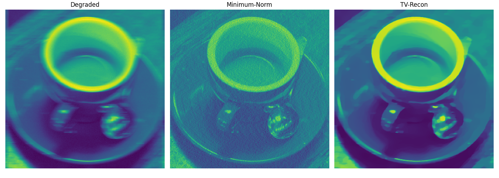

Note
Click here to download the full example code
03. Reconstruction II¶
Convolution
IN PROGRESS
Out:
/Users/lucasplagwitz/git_projects/recon/tutorials/convolution.py:89: DeprecationWarning: np.asscalar(a) is deprecated since NumPy v1.16, use a.item() instead
norm = np.abs(np.asscalar((K.H*K).eigs(neigs=1, symmetric=True, largest=True, uselobpcg=True)))
0.350540804411
Early stopping.
1.0
0.000191388322656
0.000122128998729
PSNR Noise: 22.87
PSNR Minimum-Norm: 18.84
PSNR TV-Recon: 26.34
MAE Noise: 0.0397541860084
MAE Minimum-Norm: 0.101340461986
MAE TV-Recon: 0.0264372818344
from pylops import Gradient
from recon.terms import BaseDataterm, IndicatorL2
from recon.solver import PdHgm
import matplotlib.pyplot as plt
from typing import Union
import skimage.data as skd
from scipy.fftpack import fft2, ifft2
from recon.utils import psnr
import numpy as np
def rgb2gray(rgb):
r, g, b = rgb[:,:,0], rgb[:,:,1], rgb[:,:,2]
gray = 0.2989 * r + 0.5870 * g + 0.1140 * b
return gray
gt = rgb2gray(skd.coffee())[:,80:481]
gt = gt/np.max(gt)
sh = gt.shape
a = gt
size = 20
kernel_motion_blur = np.zeros((size, size))
kernel_motion_blur[int((size-1)/2), :] = np.ones(size)
kernel_motion_blur = kernel_motion_blur / size
h = kernel_motion_blur
kernel = h
def fftconvolve2d(x, y):
# This assumes y is "smaller" than x.
f2 = ifft2(fft2(x, shape=x.shape) * fft2(y, shape=x.shape)).real
f2 = np.roll(f2, (-((y.shape[0] - 1)//2), -((y.shape[1] - 1)//2)), axis=(0, 1))
return f2
f2 = fftconvolve2d(a, kernel)
f2 = f2 + np.random.normal(0, 0.01, size=f2.shape)
back = np.roll(f2, (((kernel.shape[0] - 1)//2), ((kernel.shape[1] - 1)//2)), axis=(0, 1))
back = fft2(back, shape=back.shape)
class DatanormL2Conv(BaseDataterm):
def __init__(self,
image_size,
cop,
data: Union[float, np.ndarray] = 0,
lam: float = 1,
prox_param: float = 0.9,
sampling=None):
operator = lambda x: fft2(x, shape=a.shape)
super(DatanormL2Conv, self).__init__(operator, sampling=sampling, prox_param=prox_param)
self.lam = lam
self.data = data
self.f_data = fft2(kernel, shape=a.shape)
self.f_datah = fft2(kernel, shape=a.shape)
self.inv_operator = lambda x: ifft2(x).real
self.i = 0
def prox(self, x):
"""Proximal Operator."""
self.i += 1
u = self.inv_operator(
(self.operator(np.reshape(x, gt.shape)) + self.prox_param * self.lam *
(back) * self.f_data.conjugate()) / (1 + self.prox_param * self.lam *
self.diag_sampling * self.f_data*self.f_data.conjugate())
)
return u.ravel()
K = Gradient(gt.shape, edge=True, dtype='float64', kind='backward', sampling=1)
norm = np.abs(np.asscalar((K.H*K).eigs(neigs=1, symmetric=True, largest=True, uselobpcg=True)))
fac = 0.99
tau = fac * np.sqrt(1 / norm)
print(tau)
G = DatanormL2Conv(image_size=gt.shape, cop=kernel, data=f2, prox_param=tau, lam=100)
F_star = IndicatorL2(gt.shape, len(sh), prox_param=tau, upper_bound=1)
solver = PdHgm(K, F_star, G)
solver.max_iter = 3000
solver.tol = 1e-4
c = np.real(solver.solve())
x_tv = np.reshape(c, gt.shape)
# Proximal point algorithm for minimum norm solution.
x_old = np.zeros(gt.shape)
G = DatanormL2Conv(image_size=gt.shape, cop=kernel, data=f2, prox_param=tau, lam=1)
i = 0
while True:
x_new = np.reshape(G.prox(x_old.ravel()), gt.shape)
if i % 500 == 0:
if np.linalg.norm(x_old.ravel()-x_new.ravel())/np.linalg.norm(x_new.ravel()) < 1e-4:
break
print(np.linalg.norm(x_old.ravel()-x_new.ravel())/np.linalg.norm(x_new.ravel()))
x_old = x_new
i += 1
fig, axs = plt.subplots(1, 3, figsize=(14, 5))
axs[0].imshow(np.reshape(f2, gt.shape), vmin=0, vmax=1)
axs[0].set_title('Degraded')
axs[0].axis('off')
axs[1].imshow(x_new)
axs[1].set_title('Minimum-Norm')
axs[1].axis('off')
axs[2].imshow(x_tv, vmin=0, vmax=1)
axs[2].set_title("TV-Recon")
axs[2].axis('off')
fig.tight_layout()
plt.show()
print("PSNR Noise: " + str(psnr(gt.ravel(), f2.ravel())))
print("PSNR Minimum-Norm: " + str(psnr(gt.ravel(), x_new.ravel())))
print("PSNR TV-Recon: " + str(psnr(gt.ravel(), x_tv.ravel())))
print("MAE Noise: " + str(np.sum(np.abs(f2-gt))/np.prod(gt.shape)))
print("MAE Minimum-Norm: " + str(np.sum(np.abs(f2-x_new))/np.prod(gt.shape)))
print("MAE TV-Recon: " + str(np.sum(np.abs(f2-x_tv))/np.prod(gt.shape)))
Total running time of the script: ( 2 minutes 10.589 seconds)